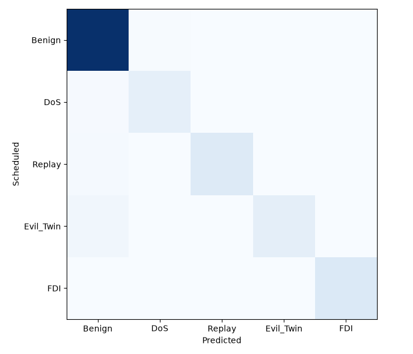
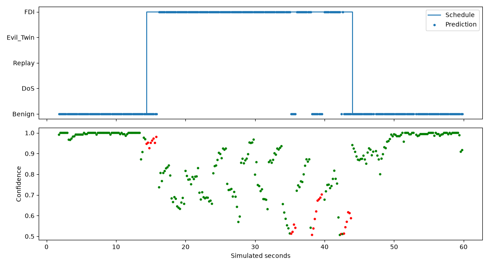

Simulated only; no SITL or captured Wi-Fi. 16108 scored rows; macro-F1 0.930; accuracy 0.953. Predictions and errors are retained in predictions.csv.


Metrics: metrics.json; attack delays: attack_delays.csv